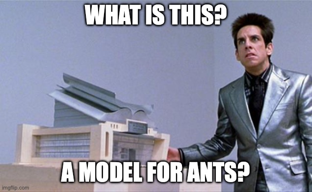

This semester
Build a foundation for statistical inference (linear regression)
How to think about your analyses before you collect data
Identify common pitfalls in statistical inference
Framework for understanding
People struggle with stats and the analysis of data for two main reasons:
Jargon. There is no way to avoid that stats is like a second language.
Translation of theory to analysis. This necessitates the integration of experimental design, data collection, and an analytic framework.
GLM
General(ized) Linear Model aka linear regression
A workhorse that is responsible for >99% of statistical tests in psychology, as well as the building block of many machine learning models
We will use the GLM equation to describe all of our analyses. Basis for communication to others.
What do we mean by General(ized)?
What do we mean by linear?
What is a model?
A representation of the world
A statistical model uses math to make predictions and thus learn about the world
YOU DEFINE THE MODEL
For the DV you care about, what do you think impacts it? What is your theory?
We need to collect data to have those variables to put into your model
Need to then describe how those variables relate to one another
Middle School Math
\[ y = mx + b \]
what is \(y\) ?
what is \(m\) ?
what is \(x\) ?
what is \(b\) ?
Let’s rewrite this
\[Y = b_0 + b_{1}X\]
what is \(Y\) ?
what is \(b_0\) ?
what is \(b_1\) ?
what is \(X\) ?
Are models always right?

MODELS ARE FLAWED
\(Y = b_0 + b_{1}X + e\)
How do we know if a model is good?
How will we use models?
This semester, we will mainly focus on classic statistical tests. Every single one of these is a model.
Think of a model before you design your experiment.
Scaffolding for more complex models.
How can we visualize data to make sense of it?
Code
library (broom)set.seed (123 ).1 <- rnorm (100 , 0 , 1 ).1 <- rnorm (100 , 0 , 2 ).1 <- .5 + .55 * x.1 + e.1 .1 <- data.frame (x.1 ,y.1 ).1 <- lm (y.1 ~ x.1 , data = d.1 )<- augment (m.1 ).1
x.1 y.1
1 -0.560475647 -1.22907473
2 -0.230177489 0.88716980
3 1.558708314 0.86390582
4 0.070508391 -0.15630558
5 0.129287735 -1.33212888
6 1.715064987 1.35323029
7 0.460916206 -0.81630503
8 -1.265061235 -3.53166755
9 -0.686852852 -0.63822211
10 -0.445661970 2.09287913
11 1.224081797 0.02255106
12 0.359813827 1.91382625
13 0.400771451 -2.51534112
14 0.110682716 0.44975156
15 -0.555841135 1.23310178
16 1.786913137 2.08510895
17 0.497850478 0.98517015
18 -1.966617157 -1.86305145
19 0.701355902 -0.81366295
20 -0.472791408 -1.80829286
21 -1.067823706 0.14799016
22 -0.217974915 -1.51483543
23 -1.026004448 -1.04541733
24 -0.728891229 -0.41307456
25 -0.625039268 3.84395241
26 -1.686693311 -1.73158112
27 0.837787044 1.43155602
28 0.153373118 0.74027691
29 -1.138136937 -2.04968858
30 1.253814921 1.04698203
31 0.426464221 3.62365704
32 -0.295071483 1.24071879
33 0.895125661 1.07478496
34 0.878133488 0.13797975
35 0.821581082 -3.15462485
36 0.688640254 3.14142657
37 0.553917654 -2.11662543
38 -0.061911711 1.94584358
39 -0.305962664 4.14992767
40 -0.380471001 -2.59704537
41 -0.694706979 1.52147983
42 -0.207917278 -0.13874948
43 -1.265396352 -3.34025631
44 2.168955965 -1.33640953
45 1.207961998 -2.03869325
46 -1.123108583 -1.17952277
47 -0.402884835 -2.64509783
48 -0.466655354 1.61917310
49 0.779965118 5.12919870
50 -0.083369066 -2.11991394
51 0.253318514 2.21480288
52 -0.028546755 2.02238377
53 -0.042870457 1.14082641
54 1.368602284 -0.76402196
55 -0.225770986 0.13692074
56 1.516470604 0.77326816
57 -1.548752804 0.77416502
58 0.584613750 0.07666005
59 0.123854244 2.52206661
60 0.215941569 -0.13039385
61 0.379639483 2.81422465
62 -0.502323453 -1.87463191
63 -0.333207384 -2.20357455
64 -1.018575383 6.42186341
65 -1.071791226 -0.92320035
66 0.303528641 1.26339594
67 0.448209779 2.01965473
68 0.053004227 -0.43840893
69 0.922267468 2.04097120
70 2.050084686 2.36547563
71 -0.491031166 -0.20082816
72 -2.309168876 -0.63945681
73 1.005738524 0.98502168
74 -0.709200763 4.36684338
75 -0.688008616 -1.36107693
76 1.025571370 -1.12792828
77 -0.284773007 0.41895164
78 -1.220717712 0.44956676
79 0.181303480 1.47276387
80 -0.138891362 -0.49312091
81 0.005764186 -1.62348197
82 0.385280401 3.23827457
83 -0.370660032 -0.40316379
84 0.644376549 -0.87661862
85 -0.220486562 -0.09382675
86 0.331781964 0.28812829
87 1.096839013 3.32310204
88 0.435181491 0.90882440
89 -0.325931586 1.82884520
90 1.148807618 0.13326016
91 0.993503856 1.47531774
92 0.548396960 0.15224650
93 0.238731735 0.82046951
94 -0.627906076 -1.63607506
95 1.360652449 -1.37324422
96 -0.600259587 4.16428400
97 2.187332993 2.90445079
98 1.532610626 -1.15960688
99 -0.235700359 -0.85196703
100 -1.026420900 -2.43549166
Code
── Attaching core tidyverse packages ──────────────────────── tidyverse 2.0.0 ──
✔ dplyr 1.1.4 ✔ readr 2.1.5
✔ forcats 1.0.0 ✔ stringr 1.5.1
✔ ggplot2 3.5.1 ✔ tibble 3.2.1
✔ lubridate 1.9.4 ✔ tidyr 1.3.1
✔ purrr 1.0.2
── Conflicts ────────────────────────────────────────── tidyverse_conflicts() ──
✖ dplyr::filter() masks stats::filter()
✖ dplyr::lag() masks stats::lag()
ℹ Use the conflicted package (<http://conflicted.r-lib.org/>) to force all conflicts to become errors
Code
ggplot (d1.f , aes (x= x.1 , y= y.1 )) + geom_point (size = 2 )
Models are lines
Code
ggplot (d1.f , aes (x= x.1 , y= y.1 )) + geom_point (size = 2 ) + geom_smooth (method = lm, se = FALSE )
`geom_smooth()` using formula = 'y ~ x'
How do we visualize categorical data?
Nominal/categorical data does not have any inherent numbers associated with it. Think control/tx, eye color, etc.
Code
set.seed (123 )<- c (0 , 1 ).2 <- rep (group, times = 50 ).1 <- rnorm (100 , 0 , 1 ).1 <- .5 + .85 * x.2 + e.1 .2 <- data.frame (x.2 ,y.1 ).2 <- lm (y.1 ~ x.2 , data = d.2 )<- augment (m.2 ).2
x.2 y.1
1 0 -0.060475647
2 1 1.119822511
3 0 2.058708314
4 1 1.420508391
5 0 0.629287735
6 1 3.065064987
7 0 0.960916206
8 1 0.084938765
9 0 -0.186852852
10 1 0.904338030
11 0 1.724081797
12 1 1.709813827
13 0 0.900771451
14 1 1.460682716
15 0 -0.055841135
16 1 3.136913137
17 0 0.997850478
18 1 -0.616617157
19 0 1.201355902
20 1 0.877208592
21 0 -0.567823706
22 1 1.132025085
23 0 -0.526004448
24 1 0.621108771
25 0 -0.125039268
26 1 -0.336693311
27 0 1.337787044
28 1 1.503373118
29 0 -0.638136937
30 1 2.603814921
31 0 0.926464221
32 1 1.054928517
33 0 1.395125661
34 1 2.228133488
35 0 1.321581082
36 1 2.038640254
37 0 1.053917654
38 1 1.288088289
39 0 0.194037336
40 1 0.969528999
41 0 -0.194706979
42 1 1.142082722
43 0 -0.765396352
44 1 3.518955965
45 0 1.707961998
46 1 0.226891417
47 0 0.097115165
48 1 0.883344646
49 0 1.279965118
50 1 1.266630934
51 0 0.753318514
52 1 1.321453245
53 0 0.457129543
54 1 2.718602284
55 0 0.274229014
56 1 2.866470604
57 0 -1.048752804
58 1 1.934613750
59 0 0.623854244
60 1 1.565941569
61 0 0.879639483
62 1 0.847676547
63 0 0.166792616
64 1 0.331424617
65 0 -0.571791226
66 1 1.653528641
67 0 0.948209779
68 1 1.403004227
69 0 1.422267468
70 1 3.400084686
71 0 0.008968834
72 1 -0.959168876
73 0 1.505738524
74 1 0.640799237
75 0 -0.188008616
76 1 2.375571370
77 0 0.215226993
78 1 0.129282288
79 0 0.681303480
80 1 1.211108638
81 0 0.505764186
82 1 1.735280401
83 0 0.129339968
84 1 1.994376549
85 0 0.279513438
86 1 1.681781964
87 0 1.596839013
88 1 1.785181491
89 0 0.174068414
90 1 2.498807618
91 0 1.493503856
92 1 1.898396960
93 0 0.738731735
94 1 0.722093924
95 0 1.860652449
96 1 0.749740413
97 0 2.687332993
98 1 2.882610626
99 0 0.264299641
100 1 0.323579100
Code
ggplot (d2.f , aes (x= x.2 , y= y.1 )) + geom_point (size = 2 ) + geom_smooth (method = lm, se = FALSE )
`geom_smooth()` using formula = 'y ~ x'
Code
ggplot (d2.f,aes (x = as.factor (x.2 ),y = y.1 )) + geom_violin (aes (fill = as.factor (x.2 )),alpha = .3 ,show.legend = FALSE ) + geom_boxplot (aes (color = as.factor (x.2 )),fill = "white" ,width = .2 ) + geom_jitter (aes (color = as.factor (x.2 ))) + labs (x = "Treatment" ,y = "y" )
What do these visualizations have in common?
. . .
LINES!
Most of what we are going to do is represent the relationship between variables with lines (or planes or hyperplanes once we get into 2 or more variables)
Thinking in terms of models
Models help us draw the lines
Our DV (here forth Y) is what we are trying to understand
We hypothesize it has some relationship with your IV(s) (hence forth Xs), with what is left over described as error (E)
\(y = b_0 + b_{1}X + e\)
\(b_{1}\) describes the strength of association i.e. the line!
Regression Equation
\[Y_i = b_{0} + b_{1}X_i +e_i\]
\(Y_i \sim Normal(\mu, \sigma)\)
The DV, \(Y\) is assumed to be distributed as a Gaussian normal, made up of \(Y_i\) , with a mean of \(\mu\) and a standard deviation of \(\sigma\)
Regression terms
Y / DV / Outcome / Response / Criterion
X / IV / Predictor / Explanatory variable
Regression coefficient (weight) / b / b* / \(\beta\)
Intercept \(b_0\) / \(\beta_{0}\)
Error / Residuals \(e\)
Predictions \(\hat{Y}\)
Regression models
These models are a way to convey the relationship between two (or more) variables. They translate our hypotheses into math.
We can use these models to get information we may be interested in (e.g. means, SEs) and test hypotheses about the relationship among variables
“All models are wrong but some are useful (and some are better than others)” - George Box
Wrap-up
Make sure you can interpret this equation:
\[Y_i = b_{0} + b_{1}X_i + e_i\] \[T.risk_i = b_{0} + b_{1}TX_i + e_i\]
Each individual has a unique Y value an X value and a residual/error term
The model only has a single \(b_{0}\) and \(b_{1}\) term. These are the regression parameters. \(b_{0}\) is the intercept and \(b_{1}\) quantifies the relationship between your model of the world and the DV.